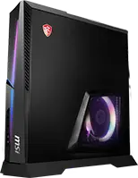
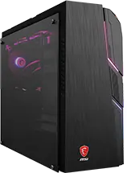
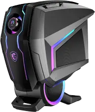
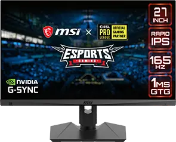
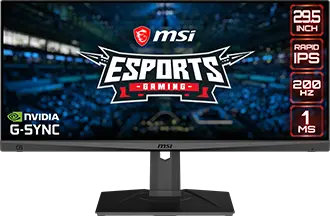
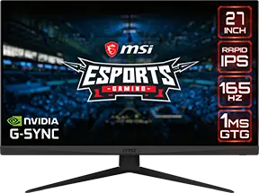

Метавселенная на подходе, и Вы, наверное, слышали:
она изменит наш образ жизни.
она изменит наш образ жизни.
Следующий шаг в эволюции Интернета, - это полноценный цифровой мир, в котором люди будут собираться, чтобы работать, играть, общаться и тусоваться. Метавселенная будет представлять собой невероятный опыт и для него потребуется мощное оборудование.
MSI может предложить все для вашего цифрового оазиса. Что выберешь ты?
MSI может предложить все для вашего цифрового оазиса. Что выберешь ты?
Десктопы
Игры
Творчество
Экшн
Стратегии
ММО
Симуляторы

Aegis Ti5
Своим дизайном компьютер MEG Aegis Ti5 выходит за рамки привычного, обращаясь в будущее. В его форме и цвете выражена идея скорости – эта мощная машина приведет геймеров к новым, запоминающимся победам в любимых играх!

Trident AS
Серия MPG делает акцент на самовыражении посредством гибко настраиваемой подсветки, чьи красочные визуальные эффекты можно синхронизировать между различными устройствами. Такие компоненты помогут собрать яркую компьютерную систему, которая будет среди лидеров не только по производительности, но и по стилю!

Codex 5
Игровой компьютер MAG Codex 5 обладает современной конфигурацией на базе процессора Intel и видеокарты NVIDIA серии RTX. Эффективная воздушная система охлаждения гарантирует стабильную работу компонентов, а красочная подсветка в сочетании с прозрачной боковой панелью из закаленного стекла позволяет персонализировать внешний вид устройства. С компьютером MAG Codex 5 вас ждет множество побед в любимых играх!
Мониторы
Плоский
Изогнутый
Full HD
До 2k
До 4k
QD
Без QD

G273QF
-Rapid IPS-панель: низкое время отклика и отличная цветопередача
-Формат WQHD: высокое разрешение обеспечивает четкое и детализированное изображение

-Повышенная частота обновления экрана: 165 Гц
-Низкое время отклика ЖК-матрицы: 1мс (при переключении между полутонами – GtG)

MAG274QRF
-Rapid IPS-панель: низкое время отклика и отличная цветопередача
-Формат WQHD: высокое разрешение обеспечивает четкое и детализированное изображение
-Повышенная частота обновления экрана: 165 Гц
-Низкое время отклика ЖК-матрицы: 1мс (при переключении между полутонами – GtG)

MAG301RF
-Rapid IPS-панель: низкое время отклика и отличная цветопередача
-Красочная цветопередача: больший спектр отображаемых оттенков по сравнению с традиционным

-Повышенная частота обновления экрана: 200 Гц
-Низкое время отклика ЖК-матрицы: 1мс (при переключении между полутонами – GtG)